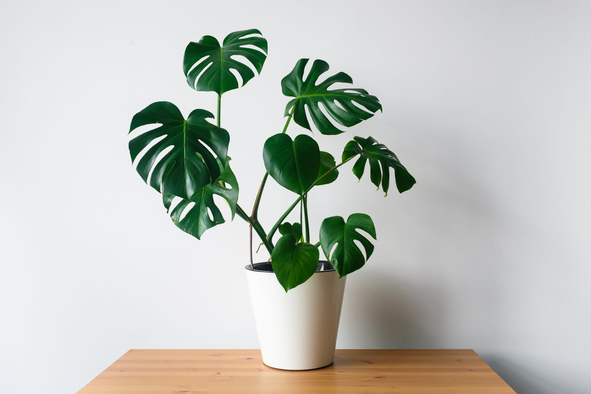

Monstera Deliciosa
La Monstera deliciosa est une plante tropicale iconique reconnaissable à ses grandes feuilles perforées. Elle apporte immédiatement une ambiance jungle et moderne à n’importe quel intérieur. Très décorative, elle s’adapte bien aux pièces lumineuses. C’est une plante robuste idéale pour débuter.
24,99 €